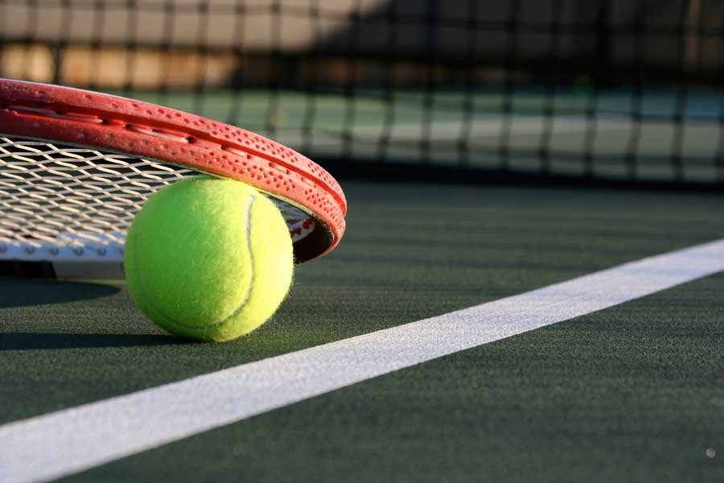
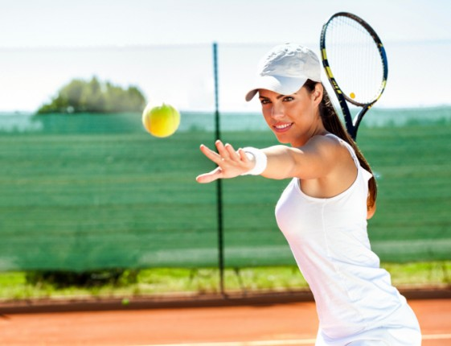

Tenis
Olimpik bir oyun olan teniste amaç topu ağ üzerinden karşı rakibin sahasına ulaştırmaktır. Var oluşu 1800'lü yıllara dayanan tenis her yaş grubundan kişiye uygun bir spor dalıdır. Tenisin tarihine baktığımızda ilk olarak İngiliz Walter C. Wingfield tarafından oynandığını görmekteyiz. 2 ya da 4 kişi ile oynanan teniste, rakete ve topa ihtiyaç vardır. Her yıl 23 Şubat, Tenisçiler Günü olarak kutlanmaktadır.
Tenis Nedir?
Raket ve topa ihtiyaç duyulan tenis sporu isteğe göre 2 ya da 4 kişi ile takım oluşturularak oynanmaktadır. Ellerinde bulunan tenis topunu raket aracılığı ile karşı rakibin sahasına atmak, tenis sporunun en temel amacıdır. 3 set sayısı dahilinde oynanan tenis 1800 yılında keşfedilmiş keyifli spor dallarından biridir. Kort yüzeyi, çim, toprak ya da beton olarak farklı alternatifleri olan sahalarda oynanabilmektedir. Standart bir tenis kortunun uzunluğu 23,77 metre, genişliği ise 10,97 metredir. Maçın kazananı en çok set alan oyuncu olarak belirlenmektedir. Beraberlik söz konusu olduğunda setler uzatılmaktadır.
Tenis Nasıl Oynanır?
Profesyonel olarak tenis sporunu yapanların yanı sıra, keyif amaçlı amatör olarak oynamak isteyenlerin tenis hakkında bilmeleri gereken birçok detay vardır. Oyunun oynanış şekli son derece kolay gibi görünse de, belli bir kural çerçevesinde olması gereken oyun, oldukça dikkat gerektirmektedir. Rakiplerden bir tarafın servis atışı ile başlayan tenis karşılaşması, iki kişi ya da dört kişi olarak oynanabilir. Servis sırası rakipler arasında belli bir düzen içinde sırasıyla devam eder. Servis atışının hatalı olmasından dolayı, topun karşı takım oyuncularına ulaşmaması ve topun filede kalması durumlarında, oyuncuya ikinci kez servis atma hakkı tanınır. Art arda tekrarlanan bu servis hatası puan kaybedilmesine neden olmaktadır.
Tenis Kortu Özellikleri
Tenis kortları için uygulanan standart arsa ölçüsü 18X36 Metredir. Çift maçı değilde tek tek oynama özelliği olursa 18metre yerine 15metre de kullanılabilmektedir. Fakat bu çok fazla tavsiye edilmez. Sebebi oyun servislerini zorlaştırır.
Sahanın özellikleri genel olarak aşağıdaki gibidir.